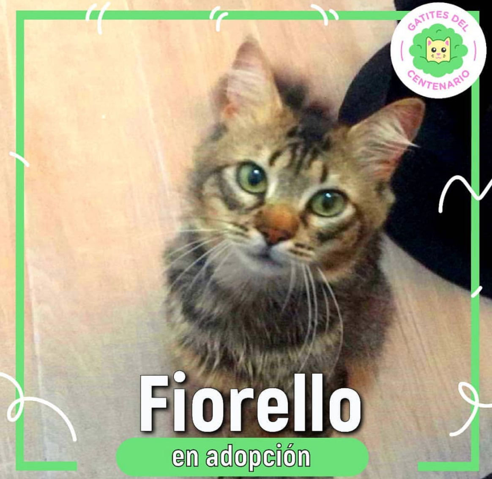

|  |
MENUthis sucks so much, it is unbelievable how annoying it is programming with html hello why is this not working for me, why life sucks in 2020?? |
Gatites del Centenario es una organización que nació en octubre del 2019 con el fin de alimentar y rescatar a los gatos que viven en el Parque Centenario de la Ciudad de CABA. Está conformada por voluntarios que se organizan para llevar a cabo la tarea de ir a alimentar dos veces al día a los gatos, rescatarlo, difundir la tarea, llevar a los gatos a la veterinaria ya castrar y coordinar las adopciones de estos. Actualmente, en el parque viven alrededor de 60 gatos que están en peligro de ser maltratados por humanos, envenenados, atacados por perros, tener hambre, lastimarse y sufrir en condiciones climáticas frías y cuando llueve. Ante esta situación, la organización se propuso alimentar a estos gatos y conseguirles hogares de tránsito donde se los ayuda a socializar, se los trata por afecciones de salud y se los prepara para las adopciones.
Para financiar nuestro trabajo, pedimos y recibimos donaciones de dinero, alimento e insumos como pipetas, literas y piedritas. A su vez, hemos realizado algunos sorteos que nos han ayudado a recaudar fondos. No solo nos ocupamos de pagar el alimento, sino que también financiamos todos los gastos de nuestros rescatados en sus tránsitos hasta el momento de la adopción.
Utilizamos mucho la red social Instagram para comunicar nuestras necesidades, así como también mostrar nuestros logros y nuestro trabajo diario. Actualmente, somos casi 20 voluntarios los que formamos parte del grupo. A futuro, nos encantaría conseguir 50 hogares de tránsitos para rescatar a todos los gatitos que quedan en las diferentes sub-colonias del parque, así como también realizar castraciones masivas para evitar que sigan naciendo gatitos sin hogar, muchos de los cuales no sobreviven a la intemperie. Como se suele decir, los gatos son territoriales, por lo que están ubicados en diferentes zonas del parque y ya tenemos identificados a muchos de ellos.
Es muy importante para nosotros también promover el no abandono de animales, así como los cuidados que se deben tener con los gatos en sus hogares, por ejemplo, poner redes en balcones y ventanas. Por eso, también difundimos en nuestras redes otros casos de proteccionistas de otras zonas, así como información relevante sobre la convivencia con gatos.
| 2020 | 2019 | 2018 |
|---|---|---|
| Rescates | Adopciones | Castraciones |
| Qa Engineer Analyst | ⭐️⭐️⭐️ |
| Lawyer | ⭐️⭐️⭐️⭐️ |
| Tour Guide | ⭐️⭐️⭐️ |
| Programmer | ⭐️⭐️⭐️ |
| Qa Engineer Analyst | ⭐️⭐️⭐️ |
Somos el grupo de voluntarios que se encarga de rescatar a los aprox 70 gatos abandonados en el Parque Centenario de CABA. Sumate como voluntario, transitante, adoptá o doná.
Facebook Instagram